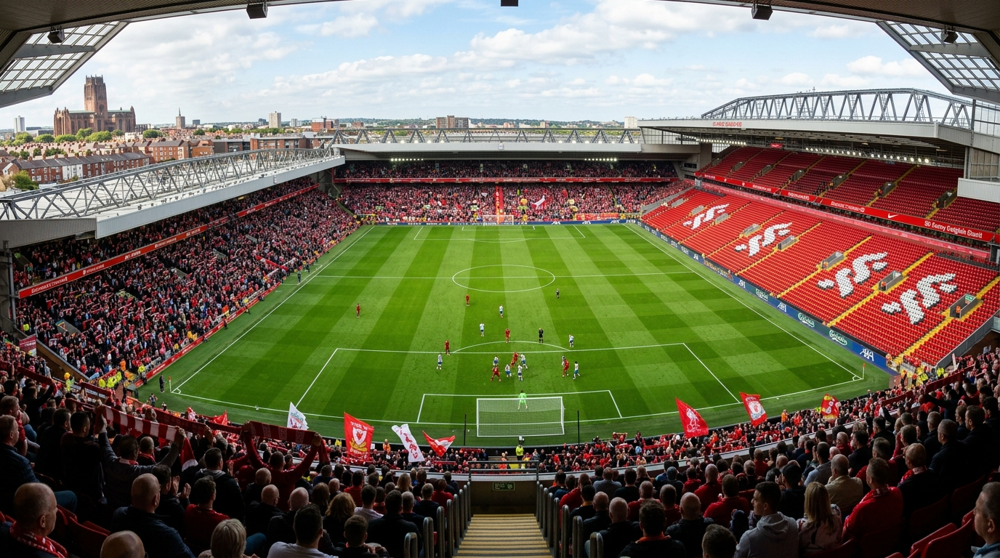

From today's featured article

Anfield is a football stadium in Anfield, Liverpool, that has been the home of Liverpool F.C. since its formation in 1892. The stadium has a seating capacity of 61,276, making it the fifth-largest football stadium in England. It was originally the home of Everton from 1884 to 1891 before they moved to Goodison Park. The stadium has four stands: the Spion Kop, the Main Stand, the Sir Kenny Dalglish Stand, and the Anfield Road End. The record attendance of 61,905 was set at a match between Liverpool and Wolverhampton Wanderers in 1952. Anfield was converted to an all-seater stadium in 1994 as a result of the Taylor Report, which reduced its capacity. Two gates at the stadium are named after former Liverpool managers Bill Shankly and Bob Paisley, both of whom have also been honoured with statues outside the stadium. Redevelopments were made to the Anfield Road Stand in 2024, which increased the stadium's capacity to more than 61,000. (This article is part of a featured topic: Liverpool F.C.)